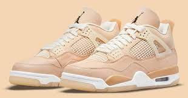

PORTFOLIO



Ik ben Maxwell Sarpong zeventien jaar oud. Onze gezin bestaat uit zes personen. Ik heb twee oudere broers en een kliene zusje van twaalf. Mijn hobbies zijn op dit moment voetbal en basketbal. Ben van plan om akls nieuwe hobby iets met schoenen te doen dat mij ook nog wat geld kan opleveren.
De opdracht Wij kregen van meneer de opdracht. Om een eigen superhero te maken met de behulp van Superfight. Elk van ons kreeg drie kaarten en moest van daaruit een superheld maken. De opdracht zelf vond ik echt goed omdat ik zelf heel erg van superhelden hou. Dus als je dat combineert met een opdracht dat op punten staat ga ik altijd een extra tandje bij steken. De moeilijkheidsgraad De moeilijksgraad lag zo tussen de vijf en zes want het was mijn eerste keer html schrijven voor echt. Het was eerst wel zoeken voor mij. ik heb zelfs tijden gehad dat ik zo erg aan mezelf twijfelde dat het mijn dag dagelijkse leven een rol heeft gespeeld. Met het maken van keuzes. Wij hebben die mindset kunnen doen keren door te mediteren en mijn innerlijke rust te vinden, met wij bedoel ik mezelf en mijn broer.
Opdracht De opdracht van deze project was dat je een website moest bouwen rond u onze vorige projecten en uzelf. Deze website moest na vijf à zes weken af zijn. Moeilijksgraad Als ik echt een nummer moet plakken dan zou ik rond de zes à zeven geven. Waarom zes à zeven ? Omdat ik een inschattings fout had gemaakt ook een beetje onderschat zovan niet tijdig begonnen met mijn taak omdat ik dacht dat dat makkelijk was.
De game was iets anders wel moeilijker maar moeilijk kan ook ik zie wel wat stappen maar die zijn nog te klein als ik ze vergelijk met mijn klasgenoten maar ik weet dat ik beter kan. Daarom heb ik nog background gemaakt voor kleine kinderen die ik zo ga linken.